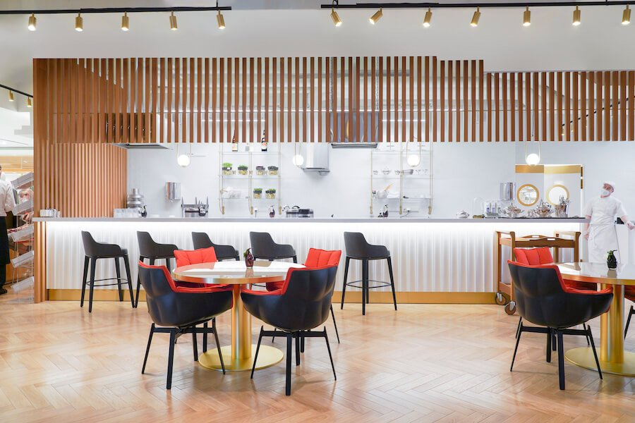
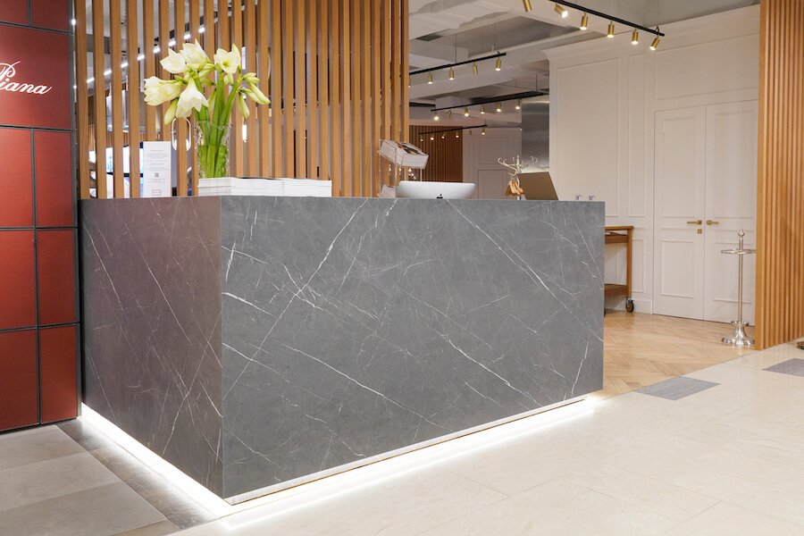
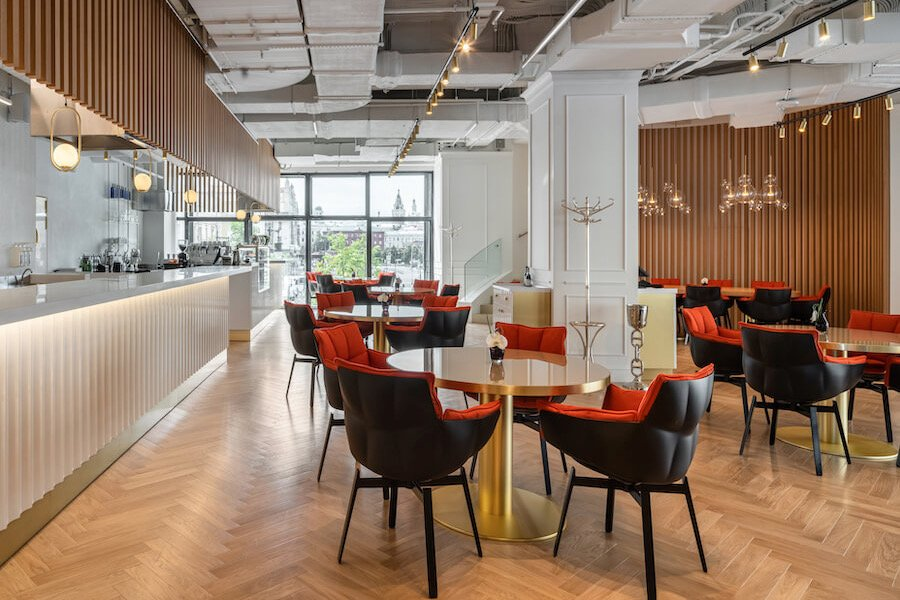

- 
- 
- 
Шеф-повар кафе на втором этаже ЦУМа внимательно следит за тенденциями в кулинарном мире и творчески сочетает проверенные временем технологии и лучшие сезонные продукты. В меню представлены новые интерпретации блюд по мотивам японской, русской и итальянской кухонь. Воскресные бранчи в ЦУМе на втором этаже уже давно стали отличной традицией.
Меню с собой